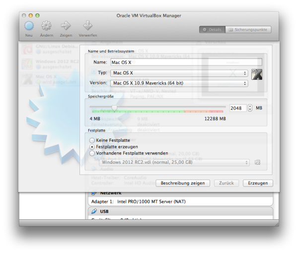
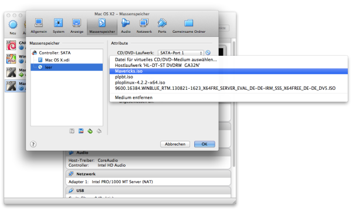

- You need a Mac and Mac OS X 10.9.3 Mavericks installed on it. If you
got both open up the Apple App Store on that Mac and search for
"Mavericks".
- Download Mavericks from the Apple App Store to your Mac.
- Open up a terminal and type in the following commands:
hdiutil attach /Applications/Install\ OS\ X\ Mavericks.app/Contents/SharedSupport/InstallESD.dmg -noverify -nobrowse -mountpoint /Volumes/install_app
hdiutil convert /Volumes/install_app/BaseSystem.dmg -format UDSP -o /tmp/Mavericks
hdiutil resize -size 8g /tmp/Mavericks.sparseimage
hdiutil attach /tmp/Mavericks.sparseimage -noverify -nobrowse -mountpoint /Volumes/install_build
rm /Volumes/install_build/System/Installation/Packages
cp -rp /Volumes/install_app/Packages /Volumes/install_build/System/Installation/
hdiutil detach /Volumes/install_app
hdiutil detach /Volumes/install_build
hdiutil resize -size `hdiutil resize -limits /tmp/Mavericks.sparseimage | tail -n 1 | awk '{ print $1 }'`b /tmp/Mavericks.sparseimage
hdiutil convert /tmp/Mavericks.sparseimage -format UDTO -o /tmp/Mavericks
rm /tmp/Mavericks.sparseimage
mv /tmp/Mavericks.cdr ~/Desktop/Mavericks.iso
- Download and Install VirtualBox and the VirtualBox Extension
Pack.
- Start VirtualBox and create a new virtual machine with a hard drive with at least 25 GB and keep the rest of the settings the same
as you can see in the following screenshots:


- Now go to the settings for the hard-/ and optical-drives and and
click on the empty disc on the left side. After this click on the
little cd on the right side and choose the Mac OS X 10.9.3 Mavericks .iso
that you have created in the steps before.


- Start your new virtual machine until you can see the installer.
Select your favourite language and when you come to the screen where
you have to choose the right harddrive where you want to install Mac OS
X 10.9.3 Mavericks you will see no drive. But don't worry this is normal
just click in the menu on "Utilitys" > "Disc Utility". Select the
virtual hard drive that you have create on the left side and on the
right side click on the tab with the name "Erase". Type in a name for
your hard drive an click on the button with the name "Erase".

- Now continue the rest of the installation process just as you had
installed Mac OS X 10.9.3 on your own Mac.
- Now we configure your new Mac OS X 10.9.3 to be able to compile the
sourcecode. At first you'll have to download and install Xcode from the
Apple App Store.
- Next we'll install the Xcode Command Line Tools. Open up a terminal
and type in:
xcode-select --install
- Download and install MacPorts.
- Open up a terminal and type in the following command to install the
necessary dependencys:
sudo /opt/local/bin/port install boost db48 qt4-mac openssl miniupnpc qrencode
- Now we will clone the Machinecoin source code from GitHub. Open up
a terminal and type in the following commands:
git clone https://github.com/machinecoin-project/Machinecoin.git
- We open "makefile.osx" and uncomment a line because of some changes
in osx 10.9.3. The result should look like the following:
# CFLAGS += -stdlib=libstdc++
- Next navigate with the terminal to the "machinecoin/src" folder and
compile the Machinecoin-Daemon with the following command:
make -f makefile.osx USE_IPV6=1 USE_UPNP=1 USE_QRCODE=1
- To make the file smaller we can strip it with the following
command:
strip machinecoind
- To create the Machinecoin-Qt navigate into the "machinecoin" folder
and type in the following command:
qmake machinecoin-qt.pro USE_IPV6=1 USE_UPNP=1 USE_QRCODE=1
and
make -f Makefile
- Now start the new compiled "Machinecoin-Qt" with a click on your
mouse and close it again after the very first start. Next enter the
following command in a terminal:
$vi /Users/<Username>/Library/"Application Support"/Machinecoin/machinecoin.conf
When the config-file opens up just insert the following lines into the
config-file and hit the save button. Don't forget to change <rpcusername>
and <rpcpassword>.
rpcuser=<rpcusername>
rpcpassword=<rpcpassword>
rpcport=40332
server=1
listen=1
daemon=1
gen=0
rpcallowip=127.0.0.1
Now start Machinecoin by clicking on the file "Machinecoin-Qt".
{kind=link}
{kind=link}